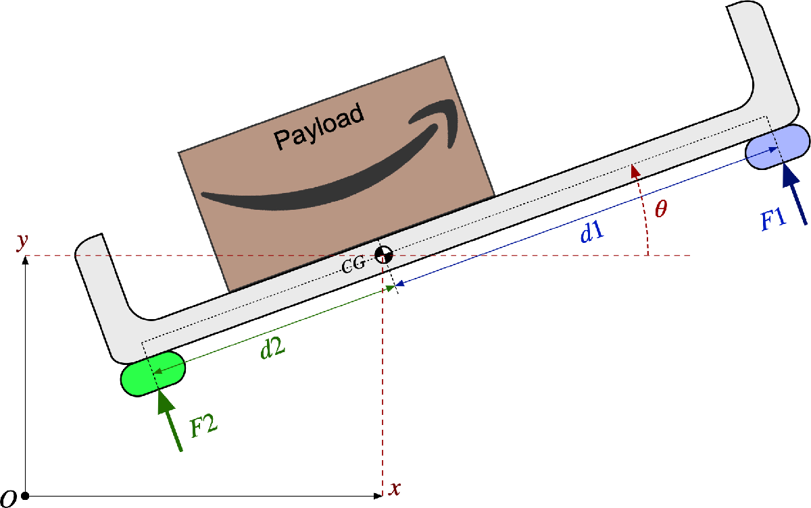
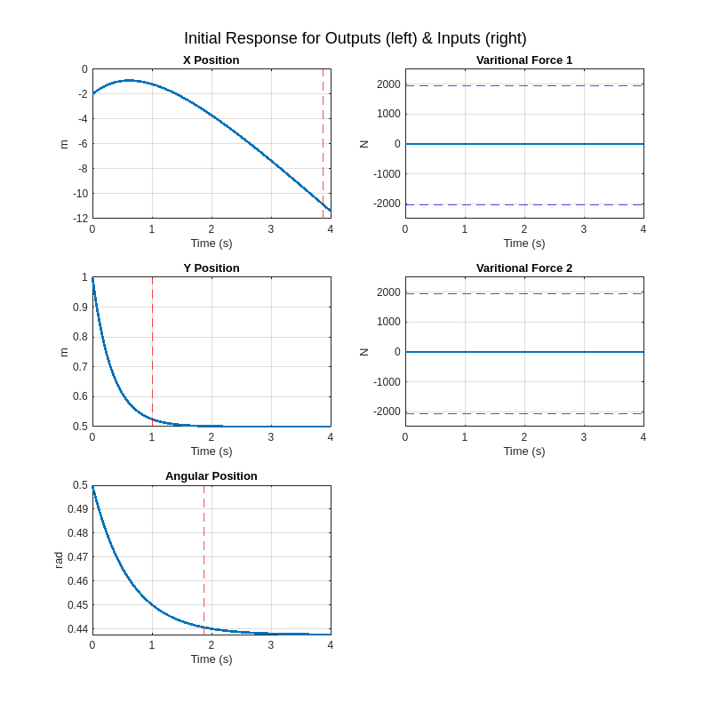
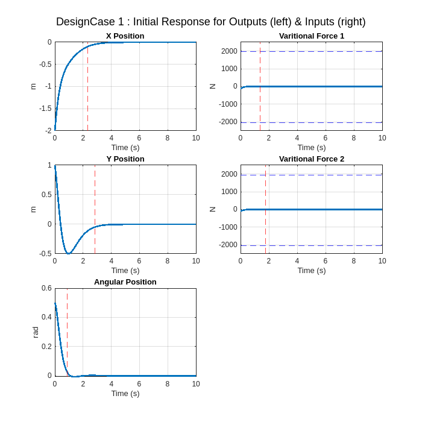
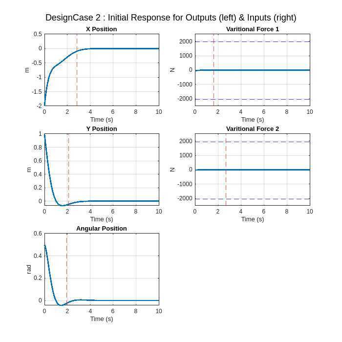
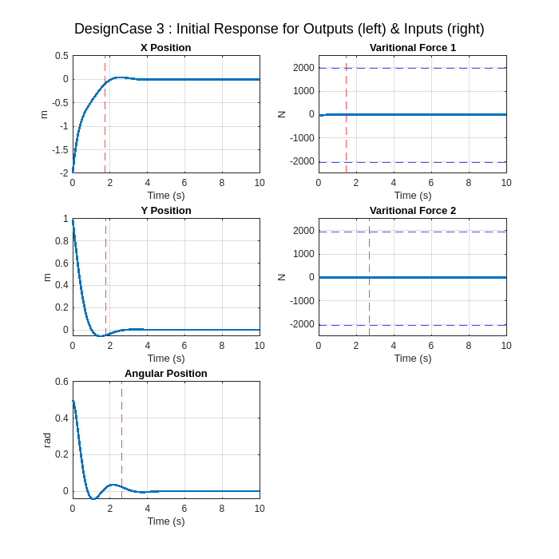
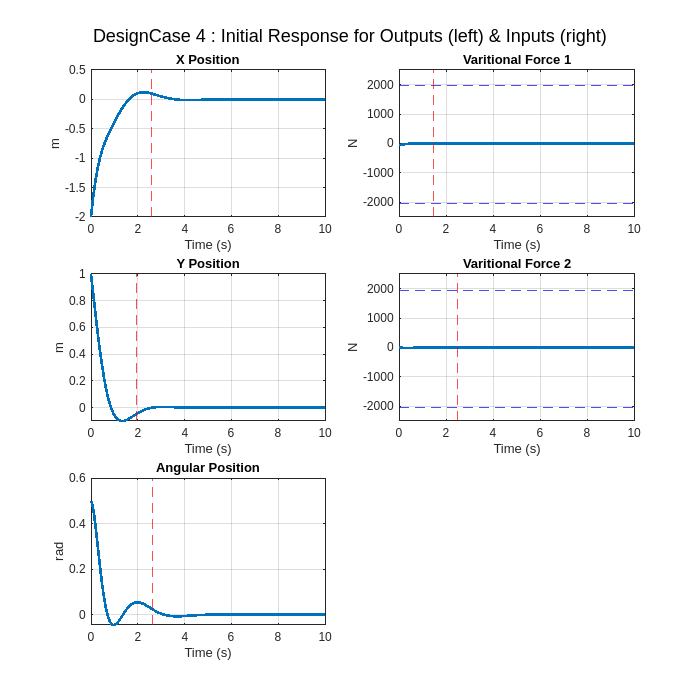

Linearized LTI Modeling Feedback Control
ME5554/AOE5754/ECE5754 Applied Linear Systems - Project I
clear;
set(0,'defaultlinelinewidth',2);
format short;
sympref('FloatingPointOutput',true);Linearized Modeling and Feedback Control of aPlanar Drone Delivery Prototype
Background
A small startup company is exploring an aerial concept for delivering packages (Payload). This concept uses an open-top bin (gray) supported by drone motors and propellors (blue-forward and green-aft).
Prior to developing a full 3D prototype, they have commissioned we to develop and validate a full state feedback control system for a 2D (i.e. planar) version as shown in Figure 1.

Figure 1. 2D-Coordinate System Definition for Prototype Aerial Package Delivery System
The following definitions refer to Figure 1:
\[ \begin{array}{l} \textrm{CG}=\textrm{center}\;\textrm{of}\;\textrm{gravity}\;\textrm{of}\;\textrm{the}\;\textrm{system}\;\textrm{with}\;\textrm{the}\;\textrm{current}\;\textrm{payload}\;\textrm{position}\\ O=\textrm{origin}\;\textrm{of}\;\textrm{the}\;\textrm{world}\;\textrm{coordinate}\;\textrm{system}\\ x\left(t\right)=\textrm{horizontal}\;\textrm{position}\;\left\lbrack m\right\rbrack \;\textrm{of}\;\textrm{the}\;\textrm{CG}\;\textrm{in}\;\textrm{the}\;\textrm{world}\;\textrm{coordinate}\;\textrm{system}\\ y\left(t\right)=\textrm{vertical}\;\textrm{position}\;\left\lbrack m\right\rbrack \;\textrm{of}\;\textrm{the}\;\textrm{CG}\;\textrm{in}\;\textrm{the}\;\textrm{world}\;\textrm{coordinate}\;\textrm{system}\\ \theta \left(t\right)=\textrm{angular}\;\textrm{rotation}\;\left\lbrack \textrm{rad}\right\rbrack \;\textrm{of}\;\textrm{the}\;\textrm{open}-\textrm{top}\;\textrm{bin}\\ F_1 \left(t\right)=\textrm{bipolar}\;\textrm{control}\;\textrm{thrust}\;\textrm{force}\;\left\lbrack N\right\rbrack \;\textrm{at}\;\textrm{the}\;\textrm{front}\;\textrm{of}\;\textrm{the}\;\textrm{bin}\\ F_2 \left(t\right)=\textrm{bipolar}\;\textrm{control}\;\textrm{thrust}\;\textrm{force}\;\left\lbrack N\right\rbrack \;\textrm{at}\;\textrm{the}\;\textrm{rear}\;\textrm{of}\;\textrm{the}\;\textrm{bin} \end{array} \]
The equations of motion for this system are non-linear; however, the following linearized equations are a reasonable approximation for the purposes of this project:
- Force balance, y-direction: \(M\ddot{\mathrm{y}} \left(t\right)=F_1 \left(t\right)+F_2 \left(t\right)-\alpha \dot{y} \left(t\right)-M\;g\;\)
- Moment balance about CG: \(J\ddot{\theta} \left(t\right)=d_1 F_1 \left(t\right)-d_2 F_2 \left(t\right)-\beta \dot{\theta} \left(t\right)\)
- Force balance, x-direction: \(M\ddot{x} \left(t\right)=-\left({\bar{F} }_1 +{\bar{F} }_2 \right)\theta \left(t\right)-\gamma \dot{x} \left(t\right)\)
The parameters associated with these dynamic equations are defined as:
\[ \begin{array}{l} g=\textrm{gravity}\;\left\lbrack \frac{m}{s^2 }\right\rbrack \\ M=\textrm{total}\;\textrm{mass}\;\left\lbrack \textrm{kg}\right\rbrack \;\textrm{of}\;\textrm{the}\;\textrm{system}\;\textrm{with}\;\textrm{payload}\\ J=\textrm{total}\;\textrm{rotational}\;\textrm{moment}\;\textrm{of}\;\textrm{inertia}\;\left\lbrack \textrm{kg}\cdot m^2 \right\rbrack \;\textrm{about}\;\textrm{the}\;\textrm{CG}\;\textrm{of}\;\textrm{the}\;\textrm{system}\;\textrm{with}\;\textrm{payload}\\ \alpha =\textrm{vertical}\;\textrm{aerodynamic}\;\textrm{damping}\;\textrm{coefficient}\;\;\left\lbrack \frac{N\cdot s}{\;m}\right\rbrack \\ \beta =\textrm{rotational}\;\textrm{aerodynamic}\;\textrm{damping}\;\textrm{coefficient}\;\left(\frac{N\cdot m\cdot s}{\textrm{rad}}\right)\\ \gamma =\textrm{horizontal}\;\textrm{aerodynamic}\;\textrm{damping}\;\textrm{coefficient}\;\left(\frac{N\cdot s}{m}\right)\\ d_1 =\textrm{distance}\;\left\lbrack m\right\rbrack \;\textrm{from}\;\textrm{the}\;\textrm{CG}\;\textrm{to}\;\textrm{the}\;\textrm{front}\;\textrm{control}\;\textrm{thrust}\\ d_2 =\textrm{distance}\;\left\lbrack m\right\rbrack \;\textrm{from}\;\textrm{the}\;\textrm{CG}\;\textrm{to}\;\textrm{the}\;\textrm{rear}\;\textrm{control}\;\textrm{thrust} \end{array} \]
Problem 1. Equilibrium Thrust Forces
Notice from the x-direction force balance equation that two variables were introduced. These variables are defined as:
\[ \begin{array}{l} {\bar{F} }_1 =\textrm{the}\;\textrm{nominal}\;\textrm{or}\;\textrm{steady}-\textrm{state}\;\textrm{nonzero}\;\textrm{front}\;\textrm{thrust}\;\left\lbrack N\right\rbrack \;\textrm{to}\;\textrm{maintain}\;\textrm{an}\;\textrm{equilibrium}\;\textrm{hover}\;\textrm{condition}\\ {\bar{F} }_2 =\textrm{the}\;\textrm{nominal}\;\textrm{or}\;\textrm{steady}-\textrm{state}\;\textrm{nonzero}\;\textrm{rear}\;\textrm{thrust}\;\left\lbrack N\right\rbrack \;\textrm{to}\;\textrm{maintain}\;\textrm{an}\;\textrm{equilibrium}\;\textrm{hover}\;\textrm{condition} \end{array} \]
Derive an analytic formula (i.e. an equation without specific numerical parameter values) relating these two nominal equilibrium thrust values to the system parameters.
Hint: When the system is in Equilibrium, all derivatives in the ODE’s must be zero!
Given,
- \(M\ddot{\mathrm{y}} \left(t\right)=F_1 \left(t\right)+F_2 \left(t\right)-\alpha \dot{y} \left(t\right)-M\;g\;\)
\(\Rightarrow F_1 \left(t\right)+F_2 \left(t\right)=M\;g\) (1.1)
- \(J\ddot{\theta} \left(t\right)=d_1 F_1 \left(t\right)-d_2 F_2 \left(t\right)-\beta \dot{\theta} \left(t\right)\)
\(\Rightarrow d_1 F_1 \left(t\right)=d_2 F_2 \left(t\right)\;\) (1.2)
- \(M\ddot{x} \left(t\right)=-\left({\bar{F} }_1 +{\bar{F} }_2 \right)\theta \left(t\right)-\gamma \dot{x} \left(t\right)\)
At equilibrium, \(\ddot{x} \left(t\right)=\dot{x} \left(t\right)=0\)
\(\begin{array}{l} \Rightarrow \left({\bar{F} }_1 +{\bar{F} }_2 \right)\theta \left(t\right)=0\\ \Rightarrow \theta \left(t\right)=0\;\;\textrm{OR}\;\;{\bar{F} }_1 =-{\bar{F} }_2 \end{array}\) (1.3)
At equilibrium, \(\theta \left(t\right)=0\) , thus we can discard (1.3)
We are left with (1.1) and (1.2)
syms d1 d2 F_1 F_2 M g
eqn1_1 = F_1+F_2 == M*geqn1_1 = \(\displaystyle F_1 +F_2 =M\,g\)
eqn1_2 = d1*(F_1)==d2*(F_2)eqn1_2 = $F_1 ,d_1 =F_2 ,d_2 $
Problem 2. Equations of Motion around the Operating Point
We now want to eliminate the equilibrium forces \({\bar{F} }_1\) and \({\bar{F} }_2\) from the equations of motion. To do this, we can introduce what are known as “variational forces”, which are simply zero-mean forces \(u_1\) and \(u_2\) which are added to the equilibrium forces to get the total forces:
\[ F_1 \left(t\right)={\bar{F} }_1 +u_1 \left(t\right) \]
\[ F_2 \left(t\right)={\bar{F} }_2 +u_2 \left(t\right) \]
Substitute these definitions into the equations of motion and eliminate the equilibrium forces. Our new equations of motion must not have any equilibrium forces remaining and must only include the variational force inputs.
Using (1.1)
\[ \begin{array}{l} F_1 \left(t\right)+F_2 \left(t\right)=M\;g\\ \Rightarrow {\bar{F} }_1 +u_1 \left(t\right)+F_2 \left(t\right)+{\bar{F} }_2 +u_2 \left(t\right)=M\;g \end{array} \]
Using (1.2)
\[ \begin{array}{l} d_1 F_1 \left(t\right)=d_2 F_2 \left(t\right)\;\\ \Rightarrow d_{1\;} \left({\bar{F} }_1 +u_1 \left(t\right)\right)=d_2 \left({\bar{F} }_2 +u_2 \left(t\right)\right) \end{array} \]
[F_bar_1, F_bar_2] = solve([eqn1_1 eqn1_2],[F_1 F_2])F_bar_1 = \(\displaystyle \frac{M\,d_2 \,g}{d_1 +d_2 }\)
F_bar_2 = \(\displaystyle \frac{M\,d_1 \,g}{d_1 +d_2 }\)
Problem 3. Analytic State-Space Model
Using the equations of motion from Problem 2, choose appropriate state variables and define a complete state-space representation for this system.
We must assume that the outputs are \(\left(x,y,\theta \right)\) because these can be measured with a GPS sensor, and the inputs must be \(\left(u_1 ,u_2 \right)\) .
Definining the State Variables:
X = \(\left\lbrack \begin{array}{c} x\\ \dot{x} \\ y\\ \dot{y} \\ \theta \\ \dot{\theta} \end{array}\right\rbrack\) \(U=\left\lbrack \begin{array}{c} u_1 \\ u_2 \end{array}\right\rbrack\) \(Y=\left\lbrack \begin{array}{c} x\\ y\\ \theta \\ u_1 \\ u_2 \end{array}\right\rbrack\)
\[ M\ddot{\mathrm{y}} \left(t\right)=F_1 \left(t\right)+F_2 \left(t\right)-\alpha \dot{y} \left(t\right)-M\;g\; \]
syms s J alpha beta gamma u1 u2
% Substituting F_1 and F_2
F_1 = simplify(F_bar_1 + u1)F_1 = \(\displaystyle u_1 +\frac{M\,d_2 \,g}{d_1 +d_2 }\)
F_2 = simplify(F_bar_2 + u2)F_2 = \(\displaystyle u_2 +\frac{M\,d_1 \,g}{d_1 +d_2 }\)
% Defining symbolic vectors for x, x_dot and y
x = sym('x', [6 1]);
x_dot = sym('x_dot', [6 1]);
u = [u1; u2];
y = [x(1);x(3);x(5);u1;u2];
% From the definitions, we can see that:
x_dot(1)=x(2);
x_dot(3)=x(4);
x_dot(5)=x(6);
% Using the equations of motions to find
% remaining x_dot as a function of x and u\[ M\ddot{\mathrm{y}} \left(t\right)=F_1 \left(t\right)+F_2 \left(t\right)-\alpha \dot{y} \left(t\right)-M\;g \]
x_dot(4) = (F_1 + F_2 - alpha*x(4) - M*g)/M;\[ J\ddot{\theta} \left(t\right)=d_1 F_1 \left(t\right)-d_2 F_2 \left(t\right)-\beta \dot{\theta} \left(t\right) \]
x_dot(6)=(d1*F_1 - d2*F_2 - beta*x(6))/J;\[ M\ddot{x} \left(t\right)=-\left({\bar{F} }_1 +{\bar{F} }_2 \right)\theta \left(t\right)-\gamma \dot{x} \left(t\right) \]
x_dot(2)=(-(F_bar_1 + F_bar_2)*x(5)-gamma*x(2))/M;\[ \begin{array}{l} \dot{X} =AX+BU\\ Y=\textrm{CX}+\textrm{DU} \end{array} \]
A = \(\left\lbrack \begin{array}{cccccc} 0 & 1 & 0 & 0 & 0 & 0\\ 0 & -\frac{\gamma }{M} & 0 & 0 & -g & 0\\ 0 & 0 & 0 & 1 & 0 & 0\\ 0 & 0 & 0 & -\frac{\alpha }{M} & 0 & 0\\ 0 & 0 & 0 & 0 & 0 & 1\\ 0 & 0 & 0 & 0 & 0 & -\frac{\beta }{J} \end{array}\right\rbrack\) \(B=\left\lbrack \begin{array}{cc} 0 & 0\\ 0 & 0\\ 0 & 0\\ \frac{1}{M} & \frac{1}{M}\\ 0 & 0\\ \frac{d_1 }{J} & -\frac{d_2 }{J} \end{array}\right\rbrack\)
\[ C=\left\lbrack \begin{array}{cccccc} 1 & 0 & 0 & 0 & 0 & 0\\ 0 & 0 & 1 & 0 & 0 & 0\\ 0 & 0 & 0 & 0 & 1 & 0\\ 0 & 0 & 0 & 0 & 0 & 0\\ 0 & 0 & 0 & 0 & 0 & 0 \end{array}\right\rbrack \] \[ D=\left\lbrack \begin{array}{cc} 0 & 0\\ 0 & 0\\ 0 & 0\\ 1 & 0\\ 0 & 1 \end{array}\right\rbrack \] # Problem 4. Define system parameters as Matlab variables
Up to this point, we have only used algebraic symbols to describe parameters in the state-space model. It is now time to substitute numerical values for these parameters. Define variables in Matlab for the following parameters:
\[ \begin{array}{l} g=9\ldotp 81\;\left(m/s^2 \right)\\ M=10\;\left(\textrm{kg}\right)\;\\ J=5\;\left(\textrm{kg}\;{\;m}^2 \right)\;\\ \alpha =30\;\left(N\;s/m\right)\\ \beta =8\;\left(N\;m\;s/\textrm{rad}\right)\\ \gamma =10\;\left(N\;s/m\right)\\ d_1 =0\ldotp 651\;\left(\textrm{meters}\right)\;\\ d_2 =0\ldotp 449\;\left(\textrm{meters}\right)\;\\ F_{\max } =\pm 2000\;\left(N\right)\;\;\;\;\;\textrm{maximum}\;\textrm{available}\;\textrm{thrust}\;\textrm{on}\;\textrm{either}\;F_1 \;\textrm{or}\;F_2 \end{array} \]
g = 9.81;
M = 10;
J = 5;
alpha = 30;
beta = 8;
gamma = 10;
d1 = 0.651;
d2 = 0.449;Compute the nominal equlibrium thrust forces and the maximum variational forces.
F_bar_1 = subs(F_bar_1)F_bar_1 = \(\displaystyle 40.0426\)
F_bar_2 = subs(F_bar_2)F_bar_2 = \(\displaystyle 58.0574\)
F_1 = subs(F_1);
F_2 = subs(F_2);
% Finding max and min values for the variational forces u1 and u2
u1_min = solve(-2000<F_1,u1);
u1_max = solve(2000>F_1,u1);
u2_min = solve(-2000<F_2,u2);
u2_max = solve(2000>F_2,u2);
disp(string(double(u1_min))+' N < u1(t) < '+ string(double(u1_max)) +' N'+newline+ ...
string(double(u2_min))+' N < u2(t) < '+ string(double(u2_max))+' N')-2039 N < u1(t) < 1959 N
-2057.1 N < u2(t) < 1940.9 NProblem 5. Numerical State-space model with state, input, and output names
Construct an LTI State-Space object in Matlab using the defined variables from Problem 4.
expand(x_dot)ans = \(\displaystyle \left(\begin{array}{c} x_2 \\ -\frac{\gamma \,x_2 }{M}-\frac{d_1 \,g\,x_5 }{d_1 +d_2 }-\frac{d_2 \,g\,x_5 }{d_1 +d_2 }\\ x_4 \\ \frac{u_1 }{M}-g+\frac{u_2 }{M}+\frac{d_1 \,g}{d_1 +d_2 }+\frac{d_2 \,g}{d_1 +d_2 }-\frac{\alpha \,x_4 }{M}\\ x_6 \\ \frac{d_1 \,u_1 }{J}-\frac{d_2 \,u_2 }{J}-\frac{\beta \,x_6 }{J} \end{array}\right)\)
x_dot = subs(x_dot);
A = double(jacobian(x_dot, x));
B = double(jacobian(x_dot, u));
C = double(jacobian(y,x));
D = double(jacobian(y,u));
sys = ss(A,B,C,D);We must define the ‘StateName’, ‘InputName’, and ‘OutputName’ properties of our LTI state-space object with strings that are representative of the actual states, inputs, and outputs. We may also want to define the StateUnit, InputUnit, and OutputUnit properties as well.
stateNames = {'X Position', 'X Velocity', 'Y Position', 'Y Velocity', 'Angular Position', 'Angular Velocity'};
inputNames = {'Varitional Force 1', 'Varitional Force 2'};
outputNames = {'X Position', 'Y Position', 'Angular Position', 'Varitional Force 1','Varitional Force 2'};
stateUnits = {'m', 'm/s', 'm', 'm/s', 'rad', 'rad/s'};
inputUnits = {'N', 'N'};
outputUnits = {'m', 'm', 'rad','N', 'N'};
sys.StateName = stateNames;
sys.InputName = inputNames;
sys.OutputName = outputNames;
sys.StateUnit = stateUnits;
sys.InputUnit = inputUnits;
sys.OutputUnit = outputUnits;Then we display our final numerical state-space model to the LiveScript and save it to a .mat file for use in the Final Project.
syssys =
A =
X Position X Velocity Y Position Y Velocity Angular Posi Angular Velo
X Position 0 1 0 0 0 0
X Velocity 0 -1 0 0 -9.81 0
Y Position 0 0 0 1 0 0
Y Velocity 0 0 0 -3 0 0
Angular Posi 0 0 0 0 0 1
Angular Velo 0 0 0 0 0 -1.6
B =
Varitional F Varitional F
X Position 0 0
X Velocity 0 0
Y Position 0 0
Y Velocity 0.1 0.1
Angular Posi 0 0
Angular Velo 0.1302 -0.0898
C =
X Position X Velocity Y Position Y Velocity Angular Posi Angular Velo
X Position 1 0 0 0 0 0
Y Position 0 0 1 0 0 0
Angular Posi 0 0 0 0 1 0
Varitional F 0 0 0 0 0 0
Varitional F 0 0 0 0 0 0
D =
Varitional F Varitional F
X Position 0 0
Y Position 0 0
Angular Posi 0 0
Varitional F 1 0
Varitional F 0 1
Continuous-time state-space model.
Model Propertiesfilename = 'MP_nishant_ss_model.mat';
save(filename, 'sys');Problem 6. Check for minimum realization
Use the MINREAL() function to demonstrate that our system is a minimum realization.
Hint: We have to compare the number of states of our original system to the number of states in the minimum realization.
min_sys = minreal(sys);
if size(sys.A) == size(min_sys.A)
disp('System is minimum realization');
else
disp('System is not minimum realization');
end System is minimum realizationProblem 7. Controllability test
Demonstrate that the open-loop system is completely controllable and explain our result.
% Check controllability of the State-Space model
ctrb_matrix = ctrb(sys.A, sys.B);
% Determine the rank of the controllability matrix
rank_ctrb = rank(ctrb_matrix);
if rank_ctrb == size(sys.A, 1)
fprintf('The system is controllable.\n');
else
fprintf('The system is not controllable.\n');
endThe system is controllable.Determine if the system is controllable with only one actuator (we must check both!).
% We can slice off the other columns of B to check for one input at a time
% and then calculate the controllability with respect to the chosen input.
for input_to_check = 1:1:size(sys.B,2)
ctrb_matrix = ctrb(sys.A, sys.B(:, input_to_check));
rank_ctrb = rank(ctrb_matrix);
if rank_ctrb == size(sys.A, 1)
fprintf('The system is controllable with respect to input %d.\n', input_to_check);
else
fprintf('The system is not controllable with respect to input %d.\n', input_to_check);
end
end The system is not controllable with respect to input 1.
The system is not controllable with respect to input 2.Problem 8. Open-loop poles & natural frequencies
Compute the open-loop eigenvalues, damping ratios, time constants, and natural frequencies in Hz. Construct a table using the Matlab TABLE() function, then display a formatted table with appropriate column and row headings in the LiveScript.
% Compute the open-loop eigenvalues
eigenvalues = eig(sys.A);
% Calculate the damping ratios, time constant and natural frequencies in Hz
damping_ratios = -real(eigenvalues) ./ abs(eigenvalues);
natural_frequencies_Hz = abs(eigenvalues) / (2 * pi);
time_constants = 1./-real(eigenvalues);
% Table
variable_names = {'Eigenvalues', 'Damping Ratios', 'Time Constants', 'Natural Frequencies (Hz)'};
table_results = table(eigenvalues, damping_ratios, time_constants, natural_frequencies_Hz, 'VariableNames', variable_names);
disp(table_results) Eigenvalues Damping Ratios Time Constants Natural Frequencies (Hz)
___________ ______________ ______________ ________________________
0 NaN -Inf 0
-1 1 1 0.15915
0 NaN -Inf 0
-3 1 0.33333 0.47746
0 NaN -Inf 0
-1.6 1 0.625 0.25465 Problem 9. Open-Loop Initial Value response simulation
Assume that the system starts with the following initial positions and velocities:
\(x\left(0\right)=-2\) m, \(y\left(0\right)=1\) m, and \(\theta \left(0\right)=0\ldotp 5\) rad.
\(\dot{x} \left(0\right)=10\) m/s, \(\dot{y} \left(0\right)=-1\ldotp 5\) m/s, and \(\dot{\theta} \left(0\right)=-0\ldotp 5\) rad/s.
Use the Matlab INITIAL function to compute the initial value response. Choose a final time that is four times the largest open-loop finite time constant.
Plot the initial value response. There must be three subplots on the left of the figure, one for each of the outputs, and two subplots on the right, one for each control signal. Note that the control signals for the open-loop system must be zero!
All subplots must be properly annotated with axis labels, units, and grid lines.
The control output plots must also show the upper and lower saturation constraints for the signals.
Use the LSIMINFO function to estimate the 5% settling time for each OUTPUT, and place a marker on each output plot at the location of its 5% settling time.
% Setting up initial conditions, new values
x0 = [-2; 4; 1; -1.5; 0.5; -0.1];
% Calculating Initival Value Response for open loop system
% Choosing final time 4x of maximum time constant
t_final = max(1./-real(eigenvalues))*4t_final = 4[y_ivr,t_ivr] = initial(sys,x0,t_final);
S = lsiminfo(y_ivr,t_ivr,"SettlingTimeThreshold",0.05)| Fields | TransientTime | SettlingTime | Min | MinTime | Max | MaxTime |
|---|---|---|---|---|---|---|
| 1 | 3.8735 | 3.8626 | -11.3930 | 4 | -0.9009 | 0.6000 |
| 2 | 0.9986 | 0.9986 | 0.5000 | 4 | 1 | 0 |
| 3 | 1.8532 | 0.6533 | 0.4376 | 4 | 0.5000 | 0 |
| 4 | 0 | 0 | 0 | 0 | 0 | 0 |
| 5 | 0 | 0 | 0 | 0 | 0 | 0 |
f = figure();
for i = 1:3
subplot(3, 2, -1+2*i); % odd numbers for left side
plot(t_ivr, y_ivr(:, i));
index = find((t_ivr-S(i).TransientTime)>0,1);
if index<=size(t_ivr,1)
xline(t_ivr(index),'--r')
end
clear index
title(sprintf('%s', outputNames{i}));
xlabel('Time (s)');
ylabel(sprintf('%s', outputUnits{i}));
grid on
end
for i = 1:2
subplot(3, 2, i*2); % even numbers for right side
plot(t_ivr, y_ivr(:, i+3)); % 4 and 5 for u1 and u2
ylim([-2500,2500])
if i == 1
yline(double(u1_max),'--b')
yline(double(u1_min),'--b')
end
if i == 2
yline(double(u2_max),'--b')
yline(double(u2_min),'--b')
end
title(sprintf('%s', inputNames{(i)}));
xlabel('Time (s)');
ylabel(sprintf('%s', inputUnits{(i)}));
grid on
end
% Adjust the overall plot title
sgtitle('Initial Response for Outputs (left) & Inputs (right)');
set(f,"Position", [0 0 800 800])
Provide a physical explanation for the open-loop response.
In problem 1, we derived the equilibrium forces for a special equilibrium where all the accelerations and velocity terms are zero. We found that there is a constant nominal force of \(\bar{F_{1\;} } =40\;N\;\&\;\bar{F_2 } =58\;N\) on the system. So when \(u_1 =u_{2\;} =0\) , we still have a thrust force \(F_1 =\bar{F_{1\;} } =40\;N\;\&\;F_2 =\bar{F_2 } =58\;N\) actint on the payload.
A body attains equilibrium in the steady state when the forces on it on are balanced, i.e. accelerations are zero or velocities are constant. In the open-loop response, we can see that the systems attains equilibrium at a non-zero value of \(\theta\) , stable position in y and a constant velocity in the negative x direction.
Why does the steady-state response look the way it does?
We have our nominal forces acting in the y direction balancing out the force due to gravity. Initially we see a deceleration due to the vertical aerodynamic damping and the velocity in y reduces to zero.
In the rotational plane, the thrust forces \(d_1 F_1 =d_2 F_2\) , balance each other, and due to the roational aerodynamic damping the rotational velocity becomes zero.
In the x plane, as \(\theta\) is not zero, for the forces to be balanced, the components \(\left({\bar{F} }_1 +{\bar{F} }_2 \right)\theta \left(t\right)=-\gamma \dot{x} \left(t\right)\) . This results in the body having a constant negative velocity, whose damping force is balancing the thrust force component in the x direction. If \(\theta \left(t\right)=0\) or sum of nominal components is zero, only then we can have a zero velocity at equilibrium for the payload.
Problem 10. Closed-Loop Design Case Study
Document five unique sets of closed-loop pole locations for full state feedback.
The target design requirements are:
- The 5% settling times for all of the outputs must be less than 3 seconds
- The peak absolute variational control signal must not exceed the saturation limits as defined above
For each design, document the following:
- 5% settling times on each of the output responses
- Peak absolute control for each of the control signals
- Does either of our closed-loop control signals exceed the saturation limits?
- Why did we choose this set of pole locations for the design?
We must use the PLACE function for each of our designs to compute the state feedback gains. After computing the state feedback gains, display a table of the closed-loop poles to demonstrate that we successfully placed the poles at the design locations.
Develop a closed-loop LTI model that augments the open-loop output vector with the two control signals, so our closed-loop output equation will have five outputs for plotting.
Use the Matlab INITIAL function to compute the initial value response with the same initial condition vector that was used in the open-loop evaluation.
Choose a final time that is fifteen times the largest open-loop time constant. % Annocement says plot at least 4s, prof used 10s
Plot the initial value response. There must be three subplots on the left of the figure, one for each of the outputs, and two subplots on the right, one for each control signal. All subplots must be properly annotated with axis labels, units, and grid lines. The control output plots must also show the upper and lower saturation constraints for the signals.
Use the LSIMINFO function to estimate the 5% settling time for each OUTPUT, and place a marker on each output plot at the location of its 5% settling time.
% Select positions for closed loop poles
for designcase = 1:5
switch designcase
case 1
fprintf("\n Design Case %d: Linearly spaced real poles \n", designcase)
clpoles = linspace(-2.0,-3.2,6);
case 2
fprintf("\n Design Case %d: Poles with same real part and linearly spaced imaginary part \n", designcase)
clpoles = -1.75+[0.5j; -0.5j; 1j; -1j; 1.5j; -1.5j];
case 3
fprintf("\n Design Case %d: Poles with same natural frequency and varying damping ratios \n", designcase)
zeta_values = [0.5;0.7;0.9];
wn = 2.5;
for i = 1:(length(clpoles)/2)
z = zeta_values(i);
clpoles(i) = -z * wn + 1j * wn * sqrt(1 - z^2);
clpoles(length(clpoles)/2+i) = -z * wn - 1j * wn * sqrt(1 - z^2);
end
case 4
fprintf("\n Design Case %d: Poles with same damping ratio and varying natural frequencies \n", designcase)
z = 0.65;
wn_values = [2.0;2.5;3.0];
for i = 1:(length(clpoles)/2)
wn = wn_values(i);
clpoles(i) = -z * wn + 1j * wn * sqrt(1 - z^2);
clpoles(length(clpoles)/2+i) = -z * wn - 1j * wn * sqrt(1 - z^2);
end
case 5
fprintf("\n Design Case %d: Poles with same imaginary part and linearly spaced real part \n", designcase)
clpoles = -[1.8+1j; 1.8-1j; 2+1j; 2-1j; 2.2+1j; 2.2-1j];
end
% Finding gains of the full state feedback
G = place(sys.A,sys.B,clpoles);
% set up the closed-loop simulation
% Caclulcate A for closed loop system
Ac = sys.A - sys.B*G;
Cc = sys.C - sys.D*G;
% Rebuild the SS for closed loop
syscl = ss(Ac,zeros(size(sys.B)),Cc,zeros(size(sys.D)));
[wn,zeta,p]=(damp(syscl));
array2table([wn./(2*pi),zeta,p],'VariableNames',{'Natural Freq (Hz)','Damping Ratio','Poles'})
% run the closed-loop initial value response simulation
% Using the initial values to calculate response for closed loop
% choosing a time that is 10 times the largest open-loop time constant
t_final = max(1./-real(eigenvalues))*10;
[y_ivr,t_ivr] = initial(syscl,x0,t_final);
S = lsiminfo(y_ivr,t_ivr,"SettlingTimeThreshold",0.05);
% plot the results
f=figure();
set(f,"Position", [0 0 700 700]);
for i = 1:3
subplot(3, 2, -1+2*i);
plot(t_ivr, y_ivr(:, i));
index = find((t_ivr-S(i).TransientTime)>0,1);
if index<=size(t_ivr,1)
xline(t_ivr(index),'--r')
end
clear index
title(sprintf('%s', outputNames{i}));
xlabel('Time (s)');
ylabel(sprintf('%s', outputUnits{i}));
grid on
end
for i = 1:2
subplot(3, 2, i*2);
plot(t_ivr, y_ivr(:, i+3));
ylim([-2500,2500])
if i == 1
yline(double(u1_max),'--b')
yline(double(u1_min),'--b')
end
if i == 2
yline(double(u2_max),'--b')
yline(double(u2_min),'--b')
end
index = find((t_ivr-S(i+3).TransientTime)>0,1);
if index<=size(t_ivr,1)
xline(t_ivr(index),'--r')
end
clear index
title(sprintf('%s', inputNames{(i)}));
xlabel('Time (s)');
ylabel(sprintf('%s', inputUnits{(i)}));
grid on
end
sgtitle(sprintf('DesignCase %d : Initial Response for Outputs (left) & Inputs (right)', designcase));
fprintf("Design Case %d: Performance Metrics \n", designcase)
% generate a table of performance metrics
T = struct2table(S);
T.outputNames = outputNames';
T.outputUnits = outputUnits';
T(:,{'outputNames','TransientTime','Max','Min','outputUnits'})
end Design Case 1: Linearly spaced real poles | Natural Freq (Hz) | Damping Ratio | Poles | |
|---|---|---|---|
| 1 | 0.3183 | 1 | -2 |
| 2 | 0.3565 | 1 | -2.2400 |
| 3 | 0.3947 | 1 | -2.4800 |
| 4 | 0.4329 | 1 | -2.7200 |
| 5 | 0.4711 | 1 | -2.9600 |
| 6 | 0.5093 | 1 | -3.2000 |

Design Case 1: Performance Metrics | outputNames | TransientTime | Max | Min | outputUnits | |
|---|---|---|---|---|---|
| 1 | ‘X Position’ | 2.3204 | -0 | -2 | ‘m’ |
| 2 | ‘Y Position’ | 2.8049 | 1 | -0.4977 | ‘m’ |
| 3 | ‘Angular Position’ | 0.8766 | 0.5000 | -0.0065 | ‘rad’ |
| 4 | ‘Varitional Force 1’ | 1.3550 | 9.5769 | -121.7398 | ‘N’ |
| 5 | ‘Varitional Force 2’ | 1.7867 | 9.3795 | -86.4857 | ‘N’ |
Design Case 2: Poles with same real part and linearly spaced imaginary part | Natural Freq (Hz) | Damping Ratio | Poles | |
|---|---|---|---|
| 1 | 0.2897 | 0.9615 | -1.7500 + 0.5000i |
| 2 | 0.2897 | 0.9615 | -1.7500 - 0.5000i |
| 3 | 0.3208 | 0.8682 | -1.7500 + 1.0000i |
| 4 | 0.3208 | 0.8682 | -1.7500 - 1.0000i |
| 5 | 0.3668 | 0.7593 | -1.7500 + 1.5000i |
| 6 | 0.3668 | 0.7593 | -1.7500 - 1.5000i |

Design Case 2: Performance Metrics | outputNames | TransientTime | Max | Min | outputUnits | |
|---|---|---|---|---|---|
| 1 | ‘X Position’ | 2.7911 | 0.0002 | -2 | ‘m’ |
| 2 | ‘Y Position’ | 2.0540 | 1 | -0.0676 | ‘m’ |
| 3 | ‘Angular Position’ | 1.9466 | 0.5000 | -0.0434 | ‘rad’ |
| 4 | ‘Varitional Force 1’ | 1.5816 | 2.4078 | -40.3949 | ‘N’ |
| 5 | ‘Varitional Force 2’ | 2.6339 | 0.8480 | -10.2505 | ‘N’ |
Design Case 3: Poles with same natural frequency and varying damping ratios | Natural Freq (Hz) | Damping Ratio | Poles | |
|---|---|---|---|
| 1 | 0.3979 | 0.5000 | -1.2500 + 2.1651i |
| 2 | 0.3979 | 0.5000 | -1.2500 - 2.1651i |
| 3 | 0.3979 | 0.9000 | -2.2500 + 1.0897i |
| 4 | 0.3979 | 0.9000 | -2.2500 - 1.0897i |
| 5 | 0.3979 | 0.7000 | -1.7500 + 1.7854i |
| 6 | 0.3979 | 0.7000 | -1.7500 - 1.7854i |

Design Case 3: Performance Metrics | outputNames | TransientTime | Max | Min | outputUnits | |
|---|---|---|---|---|---|
| 1 | ‘X Position’ | 1.7176 | 0.0447 | -2 | ‘m’ |
| 2 | ‘Y Position’ | 1.7270 | 1 | -0.0573 | ‘m’ |
| 3 | ‘Angular Position’ | 2.5860 | 0.5000 | -0.0436 | ‘rad’ |
| 4 | ‘Varitional Force 1’ | 1.4681 | 4.0556 | -47.1059 | ‘N’ |
| 5 | ‘Varitional Force 2’ | 2.6781 | 1.8044 | -8.9311 | ‘N’ |
Design Case 4: Poles with same damping ratio and varying natural frequencies | Natural Freq (Hz) | Damping Ratio | Poles | |
|---|---|---|---|
| 1 | 0.3183 | 0.6500 | -1.3000 + 1.5199i |
| 2 | 0.3183 | 0.6500 | -1.3000 - 1.5199i |
| 3 | 0.3979 | 0.6500 | -1.6250 + 1.8998i |
| 4 | 0.3979 | 0.6500 | -1.6250 - 1.8998i |
| 5 | 0.4775 | 0.6500 | -1.9500 + 2.2798i |
| 6 | 0.4775 | 0.6500 | -1.9500 - 2.2798i |

Design Case 4: Performance Metrics | outputNames | TransientTime | Max | Min | outputUnits | |
|---|---|---|---|---|---|
| 1 | ‘X Position’ | 2.5867 | 0.1215 | -2 | ‘m’ |
| 2 | ‘Y Position’ | 1.9147 | 1 | -0.0994 | ‘m’ |
| 3 | ‘Angular Position’ | 2.6082 | 0.5000 | -0.0454 | ‘rad’ |
| 4 | ‘Varitional Force 1’ | 1.4231 | 5.7033 | -55.2240 | ‘N’ |
| 5 | ‘Varitional Force 2’ | 2.4931 | 3.3209 | -11.9674 | ‘N’ |
Design Case 5: Poles with same imaginary part and linearly spaced real part | Natural Freq (Hz) | Damping Ratio | Poles | |
|---|---|---|---|
| 1 | 0.3277 | 0.8742 | -1.8000 + 1.0000i |
| 2 | 0.3277 | 0.8742 | -1.8000 - 1.0000i |
| 3 | 0.3559 | 0.8944 | -2.0000 + 1.0000i |
| 4 | 0.3559 | 0.8944 | -2.0000 - 1.0000i |
| 5 | 0.3846 | 0.9104 | -2.2000 + 1.0000i |
| 6 | 0.3846 | 0.9104 | -2.2000 - 1.0000i |
Design Case 5: Performance Metrics | outputNames | TransientTime | Max | Min | outputUnits | |
|---|---|---|---|---|---|
| 1 | ‘X Position’ | 2.5293 | 0.0013 | -2 | ‘m’ |
| 2 | ‘Y Position’ | 2.3318 | 1 | -0.0640 | ‘m’ |
| 3 | ‘Angular Position’ | 1.6071 | 0.5000 | -0.0295 | ‘rad’ |
| 4 | ‘Varitional Force 1’ | 0.7877 | 1.2177 | -36.4021 | ‘N’ |
| 5 | ‘Varitional Force 2’ | 2.9893 | 8.6989 | -9.5865 | ‘N’ |